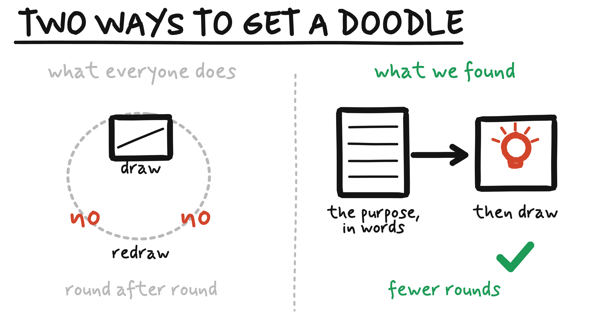
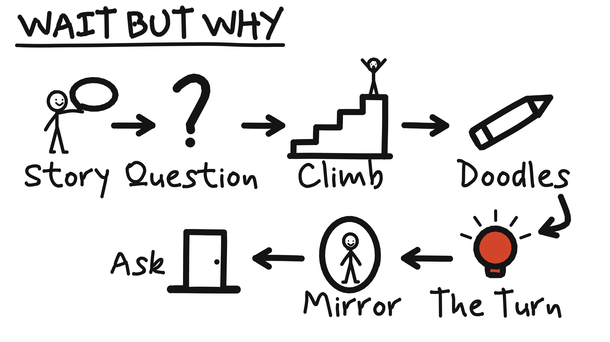
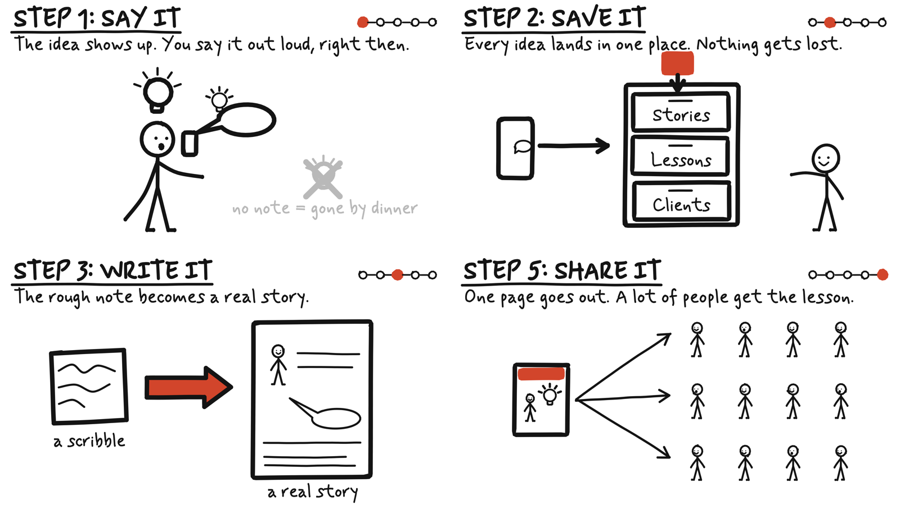
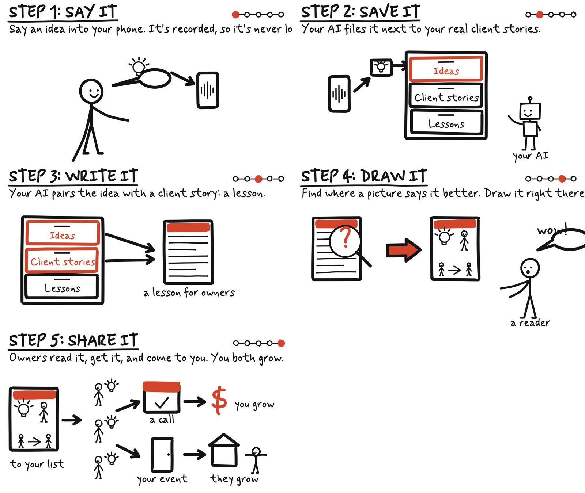
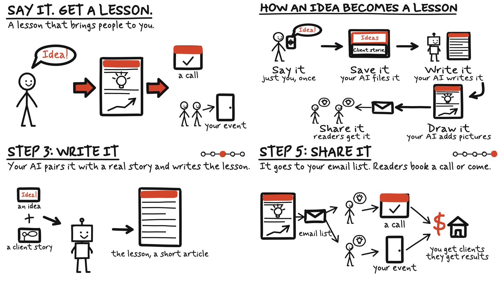
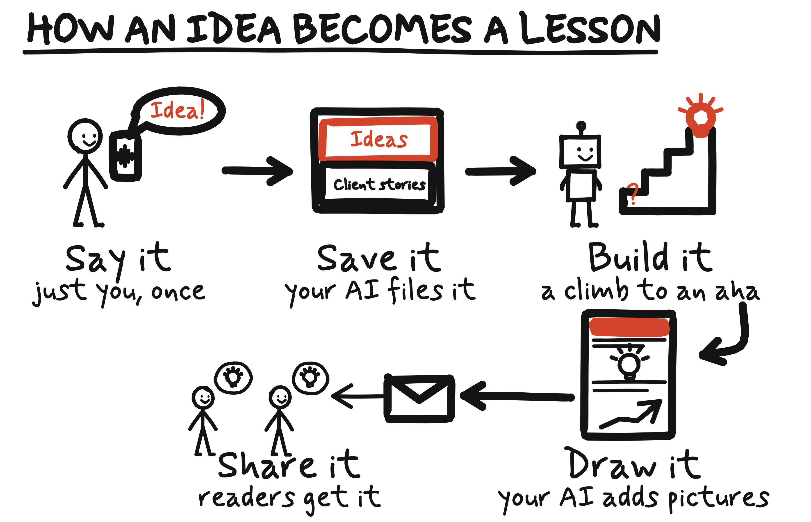
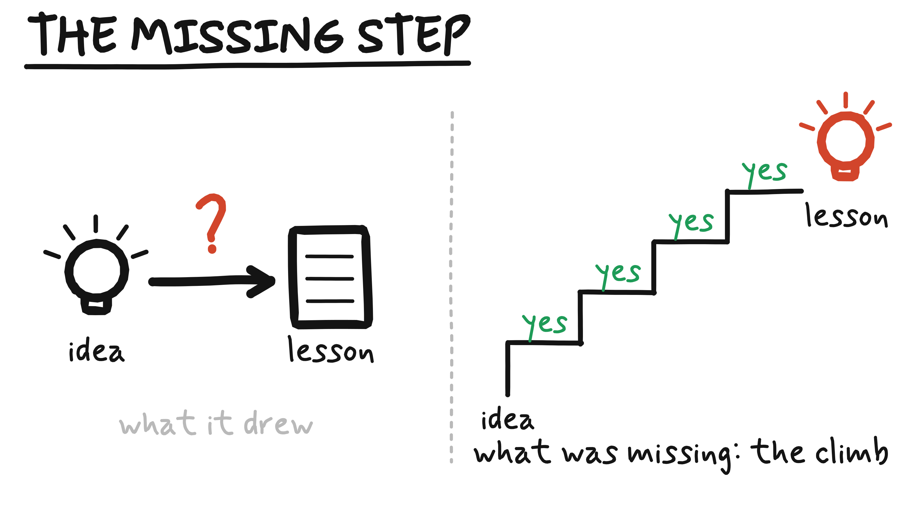

November 15, 2026
Why The Drawing Comes Last
A note before you start: this is the second piece that came out of Sunday. The first, The Genesis Seed, is about what one idea does to my day. This one is about one branch of it: how my AI finally learned to doodle, and why the way it learned isn't the way you'd think.
Have you ever tried to get an AI to draw something for you?
Here's how it usually goes.
You ask for a picture. It gives you one. It's close, but it's not it.
So you say what's wrong. It draws again. Closer. Still not it.
You say what's wrong again.
That's how I did it too. Most of Sunday night.
Here's what I found out: that loop is the wrong way to get a good doodle. And the right way doesn't start with a picture at all.
Before I ever opened an AI, I had a doodle habit.
It started with a book. Dan Roam's The Back of the Napkin. I was getting ready for my first live event, Maximum Leverage Live, and I wanted a way to show the big lessons, not just say them.
That book opened my eyes. A doodle isn't decoration. It's a language. The oldest one there is. Somebody who speaks Japanese and somebody who speaks Afrikaans can both look at the same five lines and get it.
So I sat in a bookstore for a whole day, working out which lessons mattered enough to draw. Then I drew them, live, in front of the room.
Russell Brunson saw what I was doing. He picked it up and ran with it. Now you see doodles like that everywhere.
And here's the part that stuck with me.
I drew my Story Selling chart by hand. It was janky. Shaky lines, crooked boxes. Russell had it redrawn clean and handed it back to me.
It was still my drawing. Every idea in the same place. But now it was bold. Obvious. Perfect.
That's a doodle. That's the look I've wanted ever since.
When AI showed up, I thought, finally. This thing can do what Russell's designer did.
It couldn't. Not for a long time.
Here's what I didn't understand until Sunday.
When I used to doodle, the drawing was the last thing I did.
Before I ever picked up the marker, I'd spend hours on one question. What is this lesson, really? I'd try it from one angle, then another, until something clicked. How do you make an offer people will actually jump at? I drew it as a canyon: a thirsty guy on one side, all the water in the world on the other, and the gap has to be just far enough that he'll jump.
By the time I drew that canyon, the hard part was over. I understood the thing. The drawing was just me showing you what I already saw.
When I asked my AI for a doodle, I skipped all of that.
I asked for the picture.

The first thing we fixed was the pen.
My AI's lines were heavy and jagged, like a kid's crayon. My Story Selling chart was clean. So we built a new pen. Smooth strokes, the same weight every time, still loose enough to look drawn by hand.
We tested it on a map of how a Wait But Why piece is built: story, question, climb, doodles, the turn, the mirror, the ask. Remember that climb.

That was real progress. The look got close.
But a better pen doesn't fix a muddy idea. It just draws the mud more cleanly.
Then we tried to draw a whole process. My friend and partner Jimmy's way of turning an idea into a lesson. Five steps, one picture each.
I looked at the first round and turned it down. I said what was wrong. We redrew.

Turned it down again. Said what was wrong. Redrew.

Four rounds of that. Every one got a little better. None of them got there.
Some of my notes from those rounds, in my own words:
"It all needs to be impactful."
"Where did the story come from? Why is it there now?"
"We undid the work."
That last one is the one that should have stopped us.
At about nine o'clock I stopped and asked a question.
Not "fix this drawing." A different question.
What is your experience of what we're doing right now? Are we getting better, or are you just trying things to see what passes?
And then I said what I should have said at the start.
Get it in writing first. Before any drawing. What is the whole thing for? What is each step for? What does each step hand to the next one? Is this the right way to show it? What are we assuming?
Only then draw.
That's the canyon, again. Hours on the idea. The marker last.
So we threw the drawings out and started over. In words.
A plan, in plain sentences. The purpose of the whole piece. The purpose of each step. What each picture had to prove before it was allowed to exist.
Then we drew it.

One round. Tighter than four rounds of fixing.
Here's the part I didn't see coming.
Once the plan was in words, I could actually read it. And reading it, I asked: is this really what happens?
Because the drawing showed an idea going in and a lesson coming out. And the whole point of Jimmy's process is the middle. The climb. The small yeses, one at a time, until the big idea lands on top.
Five rounds of pictures, and not one had the climb. It was sitting on the Wait But Why map we'd tested the pen on, hours earlier. None of us noticed it was gone.
The words didn't catch it on their own. But they made the whole thing short enough to read in one pass, and that's when I saw the hole.

Then a fresh reader, a second AI that hadn't watched any of it get made, looked at the new step and caught one more thing. A label that said the story "becomes the steps," with nothing showing how.
A magic arrow.
So the step got drawn again, with the how in it: each step of the climb is one small yes.

So that went into my rules too. Not just for doodles. For everything I make with my AI now. Wherever one thing turns into another, show how.
"Isn't this just slower?"
It feels slower. Writing a plan before you draw feels like stalling.
Count the rounds, though. Four rounds of fixing pictures didn't get there. One round of words, then one drawing, got closer than all four.
"Isn't the point of AI that you don't have to think this hard?"
That's what I hoped too.
What I found is that the AI is great at the drawing. It's the part I used to do in the bookstore, the thinking, that it can't do for me unless we do it together, out loud, in words.
If you've been stuck in the loop, asking for a picture, saying what's wrong, asking again, it isn't because you're bad at prompts.
You're doing it in the wrong order.
That's true when I doodle with a marker. It turned out to be true with a machine too.
Is it the Story Selling chart yet? Not quite.
But Sunday night we got closer than ever. And the reason wasn't a better pen or a smarter prompt.
It was going back to what I did in that bookstore, years ago, before I ever drew a line.
Figure out what it means first.
Then draw.